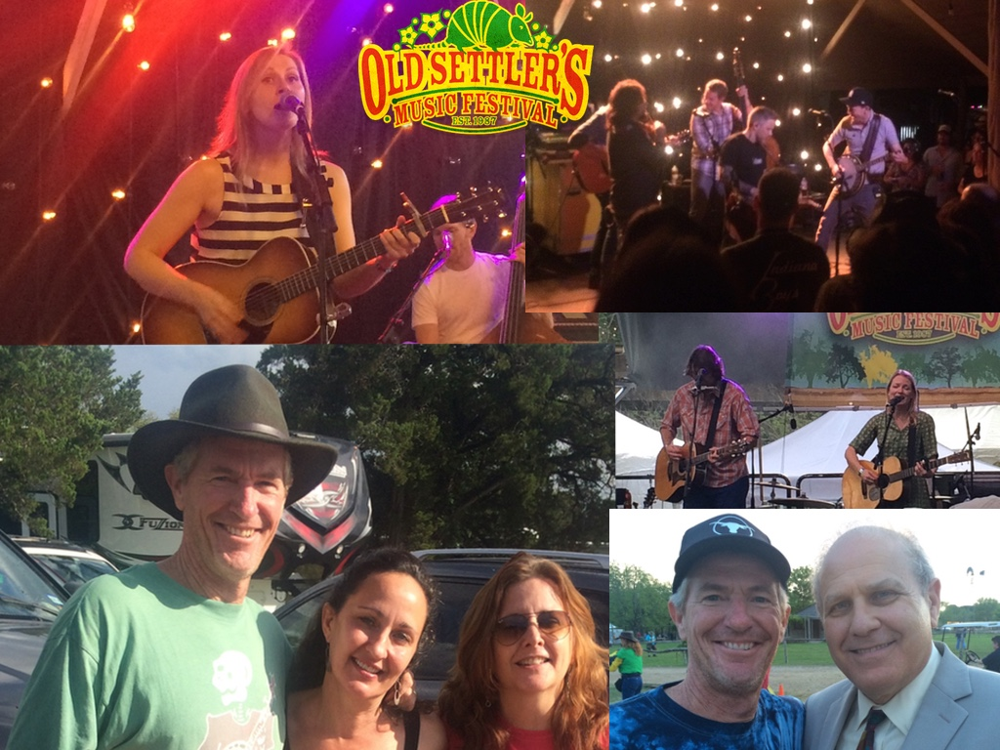

2015 Old Settlers has come and gone, and a great time was had by all. As usual, the "settle in" was awesome.
 Up first was Nora Jane Struthers & the Party Line. Pav and I saw Nora Jane a few years ago at Ricegrass when she was with Barefoot Bluegrass. It was awesome then, it's awesome now. One of my favorite tunes is still "Midnight in Montana" which has great advice for parents that are trying to get their kids goin'..."You can't get no where...unless you go!".